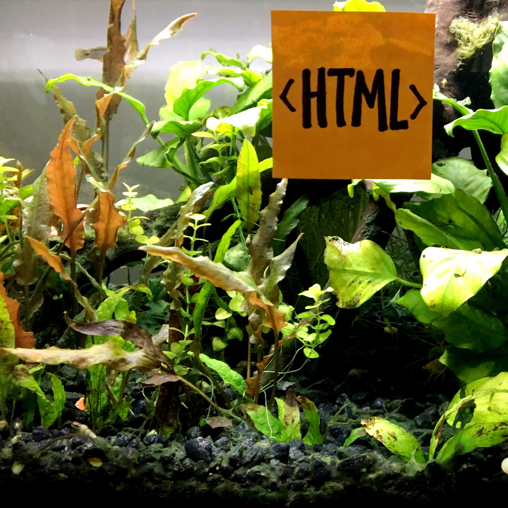

HTML
Here are HTML elements that I found to be useful while creating this website. This focuses mainly on common html elements and what they are normally used for with an emphasis on content and structure. This section also contains major definitions, information about reserved characters in HTML, information about designing for accessibility and HTML Documentation.